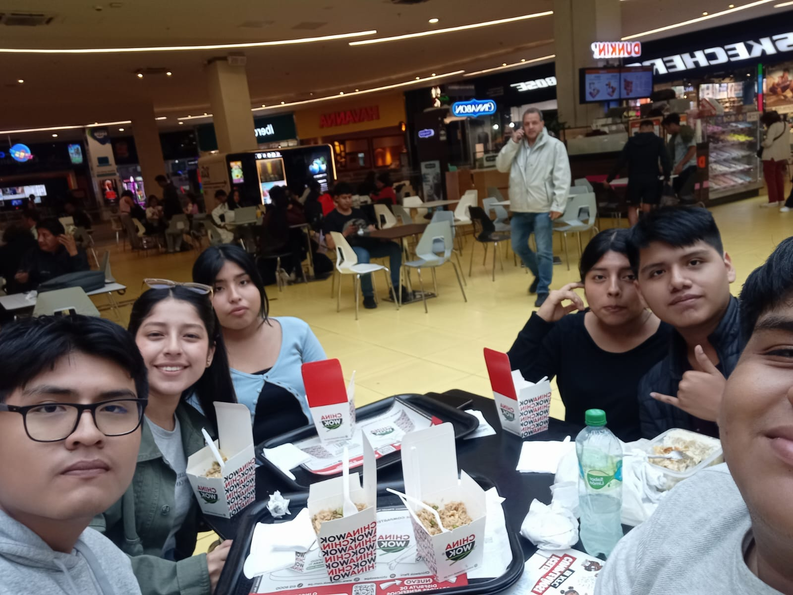

Bueno, esta web fue enteramente dedicada a ti Raquel, después de un arduo trabajo :,u y planificación de comienzos de año. Espero te guste. Verás parte de las cosas que vivimos en este año y todo lo que fue, ¡wow! sí fue bastante, jajaja. Solo quiero decirte lo especial que eres para mí y lo mucho que te quiero en cada momento. Eres importante en mi vida y eres la chica que amo y adoro ante todo. Ahora sí, ¡iniciamos! :D
Bueno iniciamos parte del año pasado, pues la verdad jaja curioso como paso esto pues no lo esperaba y quien diría todo lo que ocurriría después de esta foto.

Cuando salimos por primera vez en grupo pues fue curioso también por lo que paso en el cine. Son cosas muy curiosas las que pasaron que después marcaron lo que es ahora.
Las flores amarillas, bueno en este caso rosas, la verdad estaba muy nervioso y no sabía cómo dártelas pero me alegro mucho que te hayan gustado y me pareció gracioso lo que dijo tu entrenador cuando las vio.
El cine, uno de los lugares que más hemos visitado jaja y en el que también pasaron varias cosas. Esta fue una de las muchas veces que fuimos, en este caso con Manta. La verdad, no recuerdo la película, pero sé que estuve muy contento de verla a tu lado.
Bueno, y ahora la bicicleta, jajaja, ¡terrible! Caí feo :c, pero me preocupé mucho por lo que pudiera pasar, tanto así que, ¡pum! Qué torpe. Vi lo mucho que te preocupaste y, en verdad, estaba feliz por ello a pesar del dolor :c. Tú me alegraste mucho y, aunque fue una caída, jajaja, no olvidaría para nada ese día a tu lado. Todavía recuerdo cuando me pasaste, me sentí humillado, jaja.
La salida al mall con los chicos, después de tanto tiempo, por fin me pude tomar una foto contigo. Creo que me quedé viendo esta foto por mucho tiempo, jaja, pero tenía mucha ilusión de tener una contigo en la cual pudiéramos salir los dos. Todavía recuerdo comer nuestro pollito KFC, xd.
Tu primera vez tomando Starbucks, no lo sabía, pero después me arrepentí porque te chocó un poco a la garganta :,u, aunque estuviste bien aún así, xd. Me sentí tonto por no pensar en eso. Lo bueno es que nos divertimos mucho viendo la peli.
Y después de tu examen, cuando fuimos a comer en 7 Sopas, la verdad no estaba tan rico como pensé, pero estuvo divertido, jaja. Todavía recuerdo cuando me dijiste que tomara tu caldo y vendrías mañana a mi universidad, y ¡pum!, se me cayeron 2 brackets, jaja. Por suerte, tuviste piedad y me dijiste que no terminara, xd.
Y ahora con los patitos, cuando nos pusimos a comer y darle comida a los patos. Eso fue de las primeras veces que viniste a verme a la universidad, todavía lo recuerdo. Me acuerdo que me emocionaba mucho con la sola idea de que estabas ahí esperándome :').
Bueno, y aquí comienza nuestra época como pareja, las veces que venía a la universidad a verte y disfrutaba el tiempo contigo, y de donde surgió la foto donde quería que se viera la pulsera de los dos :').
Jajaja, todavía recuerdo cómo salió esta foto. Yo diciendo que me gustaría una foto en la que nos veamos y no sé cómo, ¡pum!, tomaste la foto. La verdad, qué habilidad para hacerlo. A pesar de que al inicio no fue como lo quería, me terminé encariñando tanto con la foto que la puse en mi inicio.
Nuestra foto, que en realidad es una captura porque la cámara del zoom estaba abierta, jaja. Ese día en el cine, y si me doy cuenta, muchas veces fuimos al cine. Esta foto fue momentos antes de que la enseñaras. Todavía me acuerdo cuando te abrazaba por la cintura y, por lo que vi, te gustó mucho, xd.

Bueno, y la última foto de nuestro recorrido juntos, en el parque de siempre, donde nos sentábamos y abrazábamos juntos los dos, donde siempre quería quedarme un momento más contigo, jaja :').